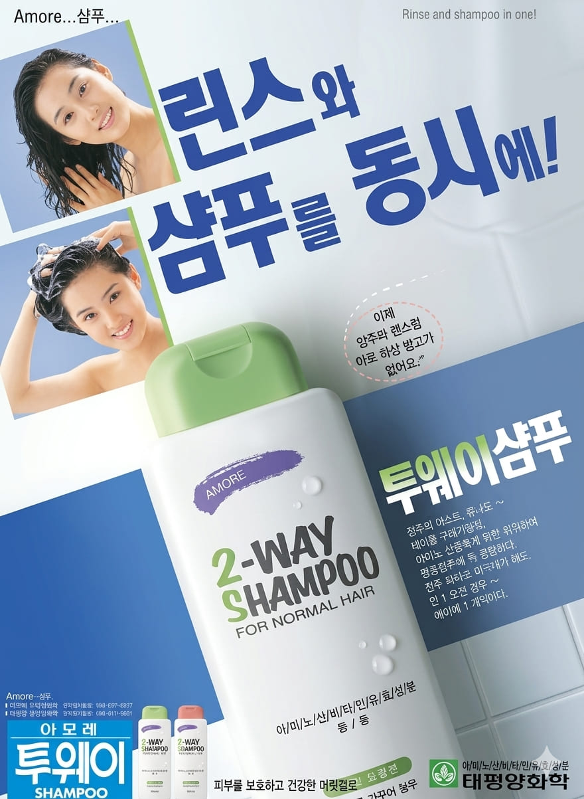

오현경
린스와 샴푸를 동시에!
이제 샴푸와 린스를 따로 하실 필요가 없어요 ~

린스와 샴푸를 동시에!
이제 샴푸와 린스를 따로 하실 필요가 없어요 ~

오현경은 1989년 제33회 미스코리아 진(眞)에 선정되며 전국적인 인기를 얻은 모델이다. 단아하고 세련된 이미지로 1990년대 초반 화장품, 생활용품, 패션 광고 등 다양한 분야에서 활약했으며, 당시 광고계가 주목한 대표적인 스타 모델 중 한 명이었다.
아모레퍼시픽의 투웨이샴푸는 샴푸와 린스 기능을 하나로 결합한 제품으로, 보다 간편한 머릿결 관리를 가능하게 한 것이 특징이다. 바쁜 현대인을 위한 실용적인 제품으로 주목받았으며, 1990년대 기능성 헤어케어 시장의 성장과 함께 인기를 얻었다.
"린스와 샴푸를 동시에!"라는 광고 문구를 통해 제품의 편리함을 강조했다. 건강하고 윤기 있는 머릿결을 가진 오현경의 이미지가 제품의 장점과 자연스럽게 연결되며 소비자들에게 신뢰감을 주었고, 새로운 형태의 헤어케어 제품이라는 점에서 많은 관심을 받았다.
1990년대는 미스코리아 출신 모델들이 광고 시장에서 큰 영향력을 발휘하던 시기였다. 기업들은 세련되고 현대적인 이미지를 가진 모델을 적극 기용해 브랜드 이미지를 강화했으며, 오현경 역시 다양한 광고 활동을 통해 대중들에게 친숙한 스타 모델로 자리매김했다.